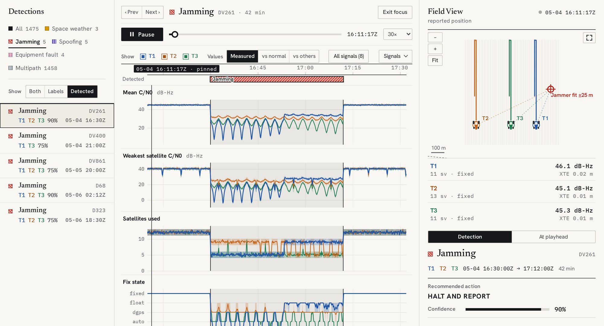

Straight Rows
I entered this solo in the Bluestaq × NDSU hackathon, built it in 24 hours, and shared first place. The organizers supplied 72 hours of synthetic 1 Hz telemetry from three GNSS-guided tractors near Casselton, ND, along with simulated space-weather and RFI feeds. The system finds each episode of degraded guidance on an unlabeled evaluation day and classifies the cause as jamming, spoofing, space weather, equipment fault or multipath. For each one it reports the affected tractors, a recommended action, a confidence score and the measurements behind the call.

- Built in
- 24 hours
- Solo
- Data
- 72 hours
- 1 Hz telemetry
- Evaluation day
- 8 of 8
- 40/40 on the organizers' diagnostic. No false positives.
How it works
Each cause has its own detector, and every detector works on residuals: a tractor's signal minus the fleet median, or minus its own quiet baseline. That keeps a fleet-wide event like a storm from hiding a local fault. Jamming appears as a C/N0 drop that weakens with distance from a single source and isn't explained by scintillation. Spoofing appears as a reported position drifting out of formation while the signal looks normal. Multipath is a short dip at each north-headland pass. With only 12 labeled practice episodes to learn from, I kept every rule physical and simple enough to state in one sentence instead of fitting a model.
The evidence
Every detection comes with evidence built from measured values and timestamps, and each line states what rules out the other causes. For example, a quiet S4 index rules out space weather. For jamming, the system also estimates the jammer's position and error ellipse from how C/N0 falls off across the fleet. Confidence is set by explicit rules: each cause starts from a base score and is lowered for named conditions, such as a jammer inside a storm, and the adjustments are listed with the detection.
Results
Thresholds were set on the labeled days only. The evaluation day was used for baselines and nothing else. The submission scored 40/40 on the organizers' automated diagnostic, matching all 8 hidden episodes with the correct action and no false positives. Because the practice-day score is in-sample, I also ran leave-one-episode-out checks and a ±20% sweep of every threshold, and documented the known failure modes, such as two causes starting at the same moment. An interactive explorer replays all 72 hours along with each detection and its evidence.